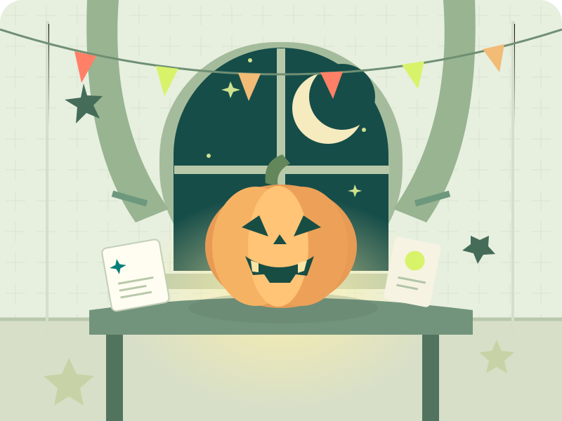

Mała zagadka. Wielka tajemnica.
Halloweenowe
Alibi.
Jeden świadek kłamie.
Odkryjesz który?
Trzy krótkie sprawy, maski i zaginiona latarnia. Przeczytaj zeznania, wskaż sprawcę i znajdź jedynego kłamcę.
Bez logowania. Bez presji czasu.

Nie zgaduj. Połącz fakty.Każda sprawa ma jedno rozwiązanie.
← Początek0:00
Dokładnie jedna osoba kłamie. Sprawca i kłamca mogą być tą samą osobą.
Twój ruch, detektywie
Połącz zeznania.
Wybierz sprawcę i kłamcę.
Odsłonić rozwiązanie tej sprawy? Możesz też wrócić do dedukcji.